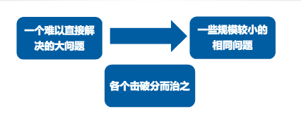
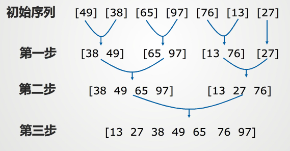

“分而治之”，大问题能够拆成相似的小问题，记住这些小问题需要具有相似性。而后将小问题的每个解合成为大问题的解。所以说大问题如何拆，小问题如何合并才是这个算法最主要的一个思想。实际上很多算法如贪心算法，动态规划等等都是要求把大问题拆成小问题。而分治算法的重要一点就是要适用于能够重新把小问题的解合并为大问题的解。

1、该问题的规模缩小到一定程度就可以很容易解决；
2、该问题可以分解为若干个规模较小的相同问题，这里注意是最优子结构性质；
3、利用该问题分解出的子问题的解可以合并为该问题的解；
4、该问题所分解出的各个子问题是相互独立的，即子问题之间不包含公共子问题；
对于很多算法而言，第一条往往是必要的，因为数据量一旦大起来，问题往往复杂度上升的特别快。这里就需要将这个大问题分解为小问题。小问题处理起来更加方便。第二、三条的才是分治思想的核心，因为很多时候我们会采用递归的方式进行解决，所以在大问题分解为小问题的时候需要保证小问题之间的相同性。单单分解为小问题之后还不能算完成，必须要能够将小问题的解合并为这个问题的最终解才能算真正用到了分治的思想。最后一条也是最关键的，各个子问题之间必须要保证独立性，即不互相影响。如果相互之间有影响，这时候我们采用的是动态规划就更加好一点。
其实算法的思想不用讲太多，能够化为几句话是最好的，下面就举几个例子来看看分治算法：
例题一：二分查找，给定一个按照升序排好的数组array，要在这个数组中找出一个特定的元素x；
当我们遇到一个问题，完全可以在心里问自己下面四个问题：
1、当前问题能不能切分？
答：能切分，因为数组按照升序来排列。所以当x大于某个元素array[mid]时，x一定在array[mid]的右边。以此再来切分。每次切一半
2、分解出来的子问题相同吗？
答：相同，每个子问题的数据集都是父问题的1/2倍。并且每次只比较子问题的中间的数据
3、子问题的解能合并为父问题的解吗？
答：不需要合并，子问题的解即为父问题的解。
4、子问题之间相互独立吗？
答：独立，子问题只是判断，不需要和父问题有很强的关联性（这里可以参考一下动态规划算法，就能理解子问题之间怎么判断是独立的）
public class Main{
public int BinarySearch(int[] array,int x,int left,int right){
while(left<=right){
int mid=(left+right)/2;
if(array[mid]==x){
return mid;
}
if(array[mid]>x)right=mid-1;
else left=mid+1;
}
return -1;
}
}例题二：归并排序，给定一个无序数组array[7]={49,38,65,97,76,13,27}，使其变的有序
同样在自己心里问问4个问题
1、当前问题能切分吗？
答：能，最简单的就是两个数之间的比较，这个数组可以看成多个两个数来比较
2、分解出来的子问题是否相同？
答：相同，都是两个数比较大小。
3、子问题的解能够合成父问题的解吗？
答：每两个有序数组再按照一定顺序合起来就是最终的题解。这里就是有个合并的过程
4、子问题之间相互独立吗？
答：独立，分到最小的时候子问题之间互不影响。
下面是归并排序代码：
public class MergeSort {
public static void merge(int[] arr,int l,int mid,int r){
int[] aux= Arrays.copyOfRange(arr,l,r+1);
int i=l,j=mid+1;
for(int k=l;k<r;k++){
if(i>mid){
arr[k]=aux[j-l];
j++;
}
else if(j>r){
arr[k]=aux[i-l];
i++;
}
else if(aux[i-l]<aux[j-l]){
arr[k]=aux[i-l];i++;
}
else {
arr[k]=aux[j-l];j++;
}
}
}
// 递归使用归并排序,对arr[l...r]的范围进行排序
public static void sort(int[] arr, int l, int r) {
if (l >= r)
return;
int mid = (l+r)/2;
sort(arr, l, mid);
sort(arr, mid + 1, r);
merge(arr, l, mid, r);
}
}归并的示意图如下：

最后问题来了，快速排序是用了分治算法的思想吗？
分治算法只是一种思想，不是一个具体的套路，只能说在碰见具体问题时我们能够从这个思路去思考，切分问题？合并问题？子问题之间影响关联大不大？这些都是具体问题具体考虑。还有很多很多题目是用了分治算法。也可以多刷刷题